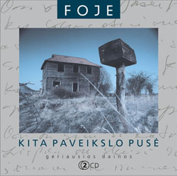

 |
kita paveikslo pusė |
Info
2006-aisiais FOJE pristato dvigubą rinkinį “Kita Paveikslo pusė” - 2002-aisiais pasirodžiusio dvigubo geriausių dainų albumo “Paveikslas” tęsinį. “Kitoje Paveikslo pusėje” pateikti skaitmeninėmis technologijomis atnaujinti 32 dainų įrašai iš kultinių “Foje” albumų “Vandenyje”, “Kai perplauki upę”, “Gali skambėti keistai”, “Geltoni krantai”. Albumo pristatymas vyko Antakalnio vidurinėje mokykloje (buvusi 18-oji vidurinė mokykla), kur kartu vėl pasirodė Andrius Mamontovas, Arnoldas Lukošius, Algis Kriščiūnas, Darius Burokas ir Darius Tarasevičius.
-
CD1
- Niekada
- Kibernetiniai žaislai
- Tu krenti
- Ir aš dar gyvensiu
- Žodžiai į tylą
- Jeigu tu ten buvai
- Nieko panašaus (koncertinis)
- Kita diena
- Alternatyvinė daina apie meilę
- Ponas niekas
- Upė iš lėto plauks
- Tu nieko dar nepažinai
- Tolyn nuo tavęs
- Mėnulio veidas (koncertinis)
- Sugrįžk
- Rankos paliečia smėlį
CD2 - Tamsiausia valanda
- Ši minutė
- Skrisk
- Ketvirtoji daina
- Paskutinė diena
- Žodžių reikšmė
- Tu vėl esi akla
- Sapnai
- Bet
- Laužai
- Hey hey hey hey
- Paskutinė žiema
- Aš laukiu tavęs
- Sukasi aplink
- Tiktai muzika (koncertinis)
- Mes laimingi visi
Žmonės
- Darius Burokas – boso gitara, klavišiniai
- Algis Krikščiūnas – mušamieji, perkusija
- Arnoldas Lukošius – klavišiniai, akordeonas
- Andrius Mamontovas – gitaros, balsas
- Algimantas Kriščiūnas – viršelio fotografija
- G. Lisauskaitė – albumo dizainas